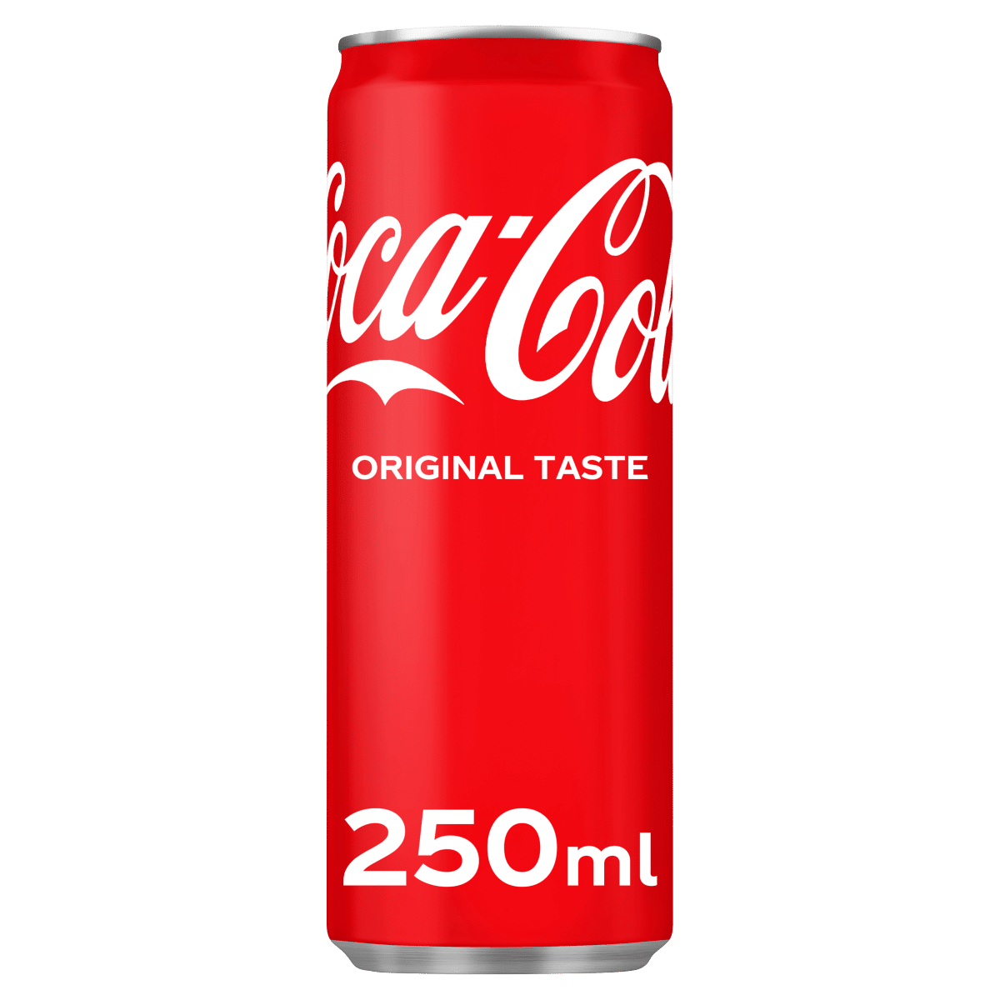
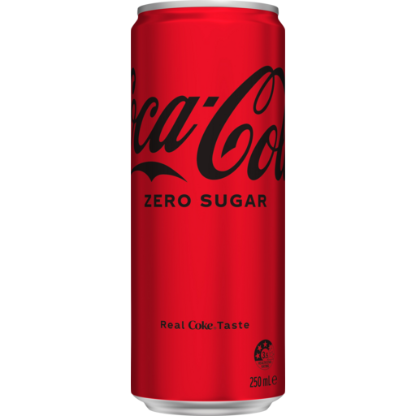
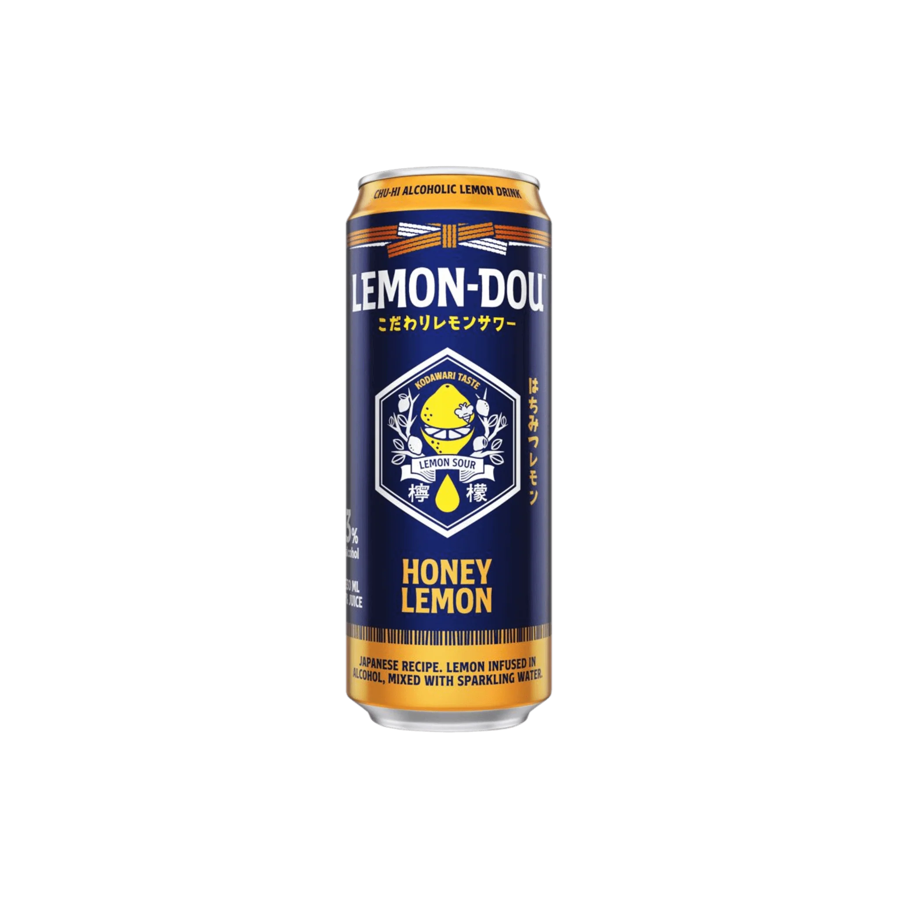
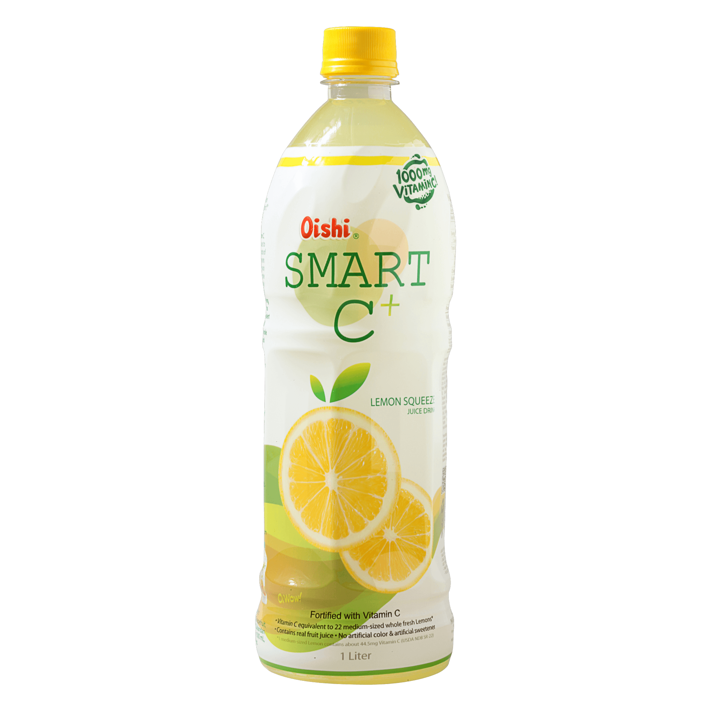
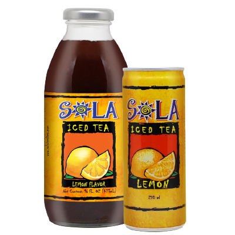
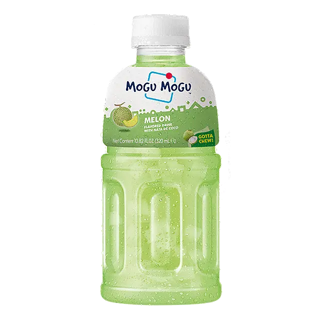
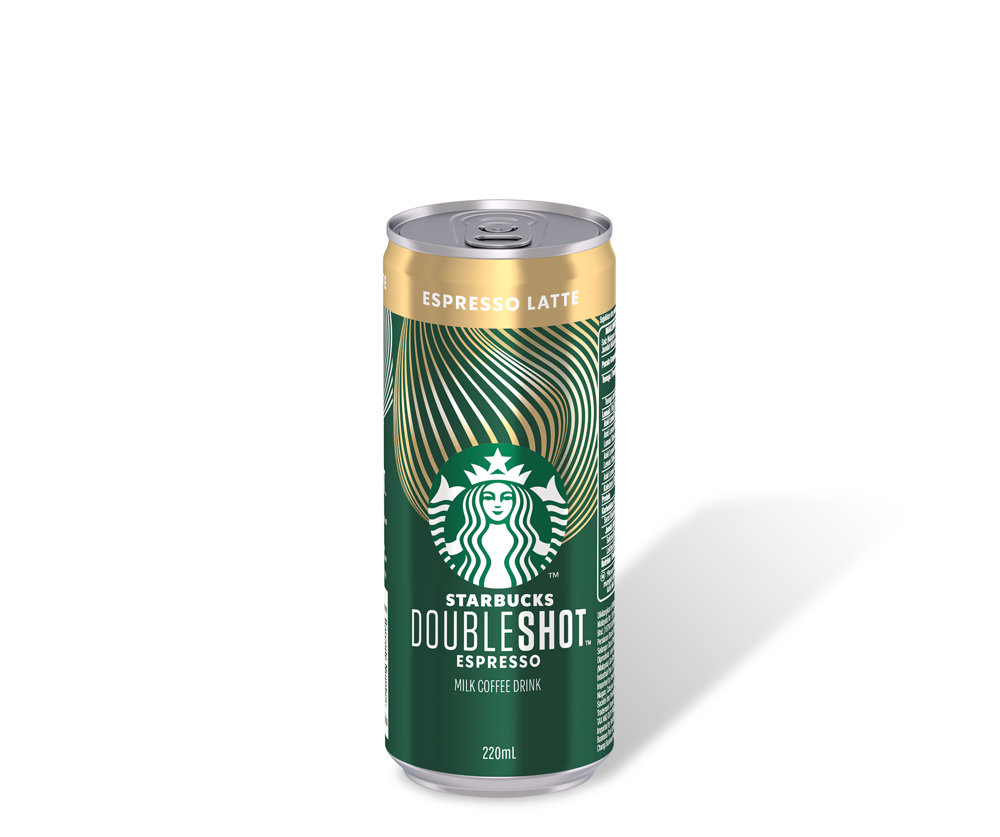
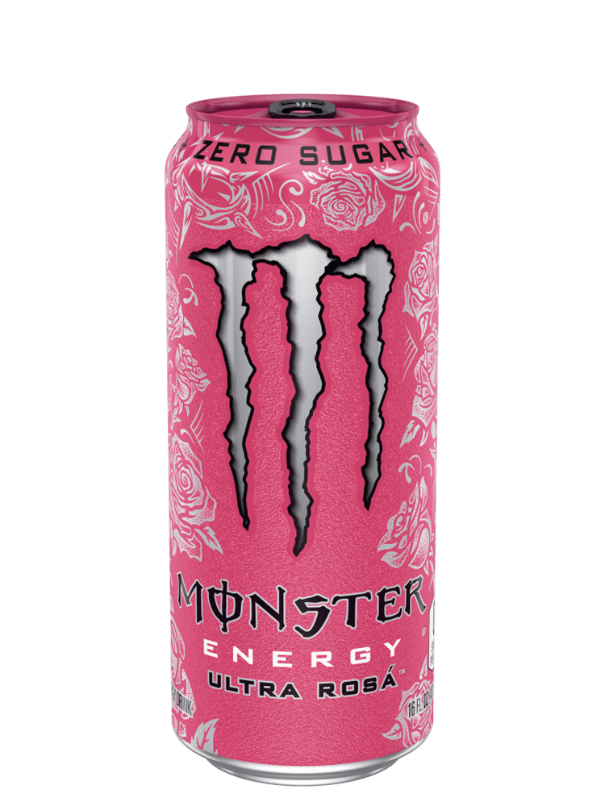
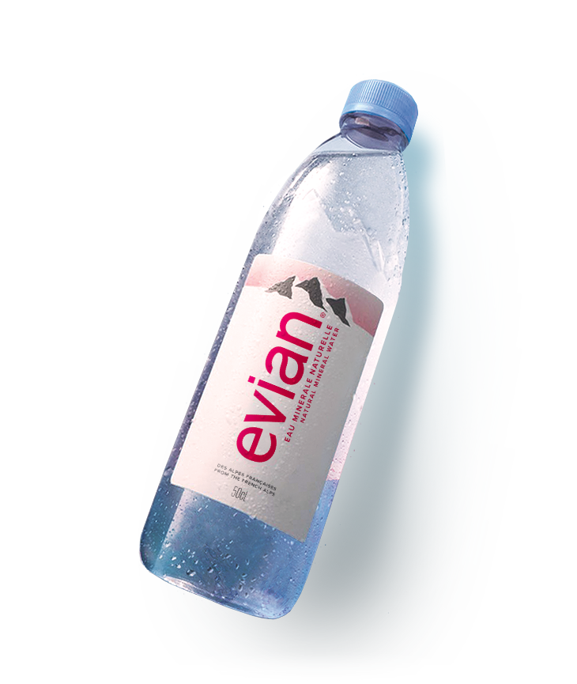

| Coke Original |
250 ml |
Coke Original is a classic carbonated soft drink with a refreshing and bold cola flavor. Made with its signature secret formula, it delivers the perfect balance of sweetness and fizz. Enjoy it ice-cold for a crisp and satisfying taste! |
Carbonated water, high fructose corn syrup or sugar, caramel color, phosphoric acid, natural flavors, caffeine. |
 |
| Coke Zero |
250 ml |
Coke Zero is a sugar-free, calorie-free version of the classic Coca-Cola, offering the same bold cola taste without the added sugar. It’s perfect for those who want the Coca-Cola experience while reducing their sugar intake. With its smooth and refreshing flavor, it’s a great choice for any occasion. |
Carbonated water, caramel color, phosphoric acid, aspartame, potassium benzoate (to protect taste), natural flavors, potassium citrate, acesulfame potassium, caffeine. |
 |
| Lemon Dou |
250 ml |
Lemon-Dou is a Japanese-inspired chu-hi beverage that blends the tartness of whole crushed lemons with a refreshing fizz. Introduced by Coca-Cola in 2018, it's available in various alcohol content levels to suit different preferences. The drink is crafted by infusing crushed whole lemons into alcohol and adding carbonation, resulting in a full-bodied lemon-sour experience. |
Carbonated water, alcohol, lemon puree (from whole crushed lemons), high fructose corn syrup, natural flavors. |
 |
| Smart C |
250 ml |
Smart C+ is a vitamin-infused juice drink packed with 500mg of vitamin C per bottle to help boost immunity. It comes in refreshing fruity flavors like Lemon Squeeze, Orange Crush, and Pomelo Grapefruit, offering a delicious and healthy way to stay hydrated. With its light and refreshing taste, it’s a great alternative to sugary sodas. |
Purified water, natural fruit juice, cane sugar, citric acid, vitamin C (ascorbic acid), sodium citrate, and natural flavors. |
 |
| Sola Iced Tea |
250 ml |
Sola Iced Tea is a refreshing, ready-to-drink beverage known for its smooth and natural tea flavor. Made with real brewed tea and sweetened with honey, it offers a perfectly balanced taste with just the right amount of sweetness. Available in flavors like Lemon, Raspberry, and Peach, it’s a go-to drink for tea lovers looking for a refreshing pick-me-up. |
Brewed tea (water, tea leaves), cane sugar, honey, citric acid, natural flavors. |
 |
| Mogu Mogu |
250 ml |
Mogu Mogu is a unique and fun fruit juice drink with chewy nata de coco bits, making every sip a delightful experience. It comes in a variety of fruity flavors like Mango, Lychee, Strawberry, and Grape, offering a refreshing twist on traditional juices. Perfect for those who love both a drink and a snack in one! |
Water, fruit juice, nata de coco, fructose syrup, sugar, citric acid, artificial flavors, and food coloring (varies by flavor). |
 |
| Starbucks Latte |
250 ml |
Starbucks Ready-to-Drink (RTD) Canned Coffee is a convenient and delicious way to enjoy the signature Starbucks coffee experience on the go. Available in flavors like Caffè Latte, Mocha, and Black Coffee, it delivers a rich and smooth taste with just the right amount of sweetness. Perfect for a quick caffeine fix, it's a great companion for busy mornings or afternoon pick-me-ups. |
Brewed coffee, milk, sugar, cream, natural flavors, and caffeine (ingredients may vary by flavor). |
 |
| Nestle Fresh Milk |
1000 ml |
Fresh Milk is a nutrient-rich dairy drink packed with essential vitamins and minerals like calcium, protein, and vitamin D. It has a creamy, smooth taste and can be enjoyed on its own, with cereal, or as an ingredient in various recipes. A great source of natural energy, fresh milk is perfect for all ages. |
100% fresh cow’s milk (pasteurized and homogenized). |
 |
| Monster |
250 ml |
Monster Energy Drink is a high-caffeine beverage designed to boost energy, focus, and endurance. It has a bold, sweet, and slightly carbonated taste, making it a popular choice for athletes, gamers, and those needing an energy boost. Packed with B vitamins and energy-enhancing ingredients, it helps keep you energized throughout the day. |
Carbonated water, high fructose corn syrup, citric acid, taurine, sodium citrate, natural flavors, caffeine, panax ginseng extract, L-carnitine, sorbic acid, benzoic acid, niacinamide (vitamin B3), sodium chloride, glucuronolactone, inositol, guarana extract, pyridoxine hydrochloride (vitamin B6), riboflavin (vitamin B2), and cyanocobalamin (vitamin B12). |
 |
| Evian |
500 ml |
Evian Natural Mineral Water is a premium bottled water sourced from the French Alps, naturally filtered through glacial rocks for over 15 years. It has a crisp, refreshing taste with a balanced mineral composition, including calcium, magnesium, and potassium, which help support hydration and overall well-being. Free from added chemicals and purification processes, it’s a pure and natural way to stay refreshed. |
100% natural mineral water (with naturally occurring electrolytes and minerals). |
 |